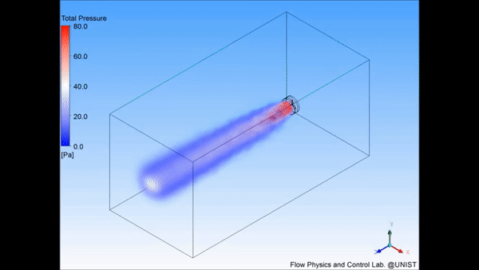
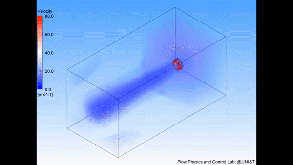
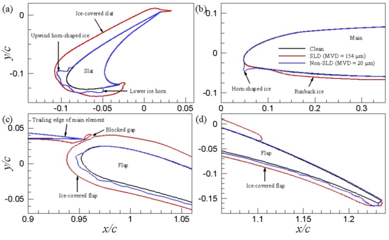
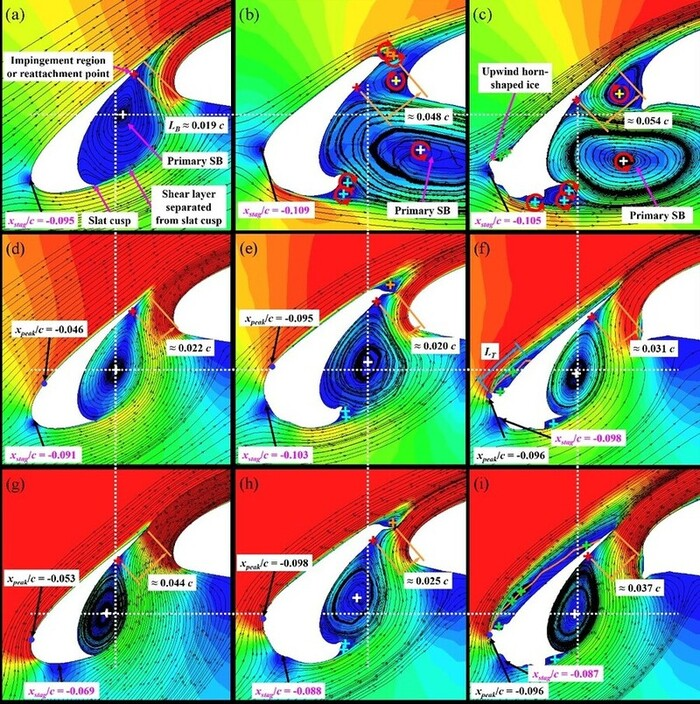
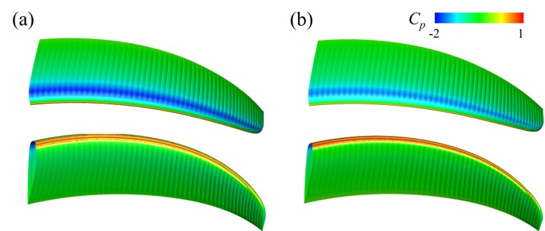
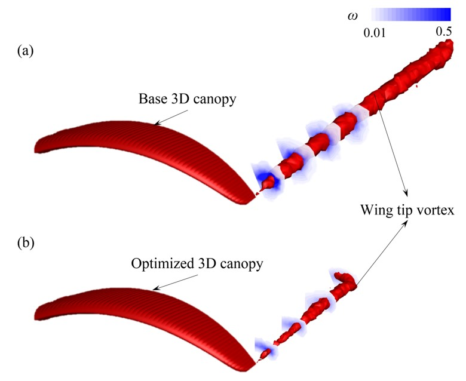
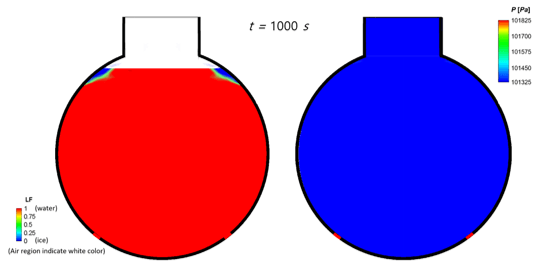
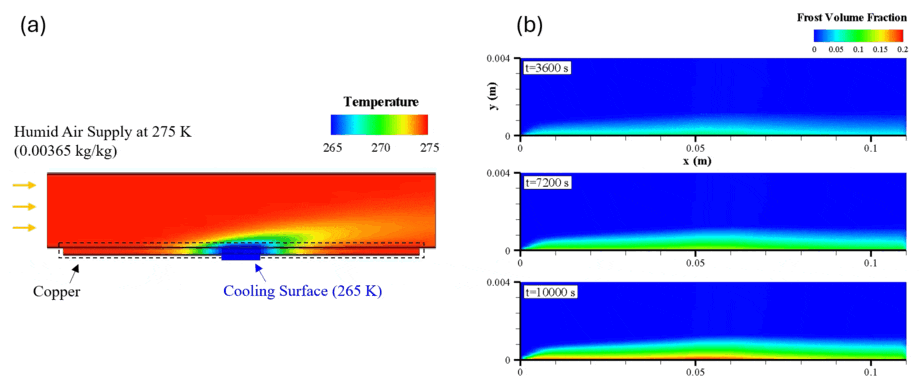

Research
CFD application
Aerodynamics of Hyperloop System
The Hyperloop (proposed by Elon Musk at Tesla) is one of right solution for the specific case of high traffic city pairs that are less than about 1500 km or 900 miles apart. A pod-like vehicle runs through a near-vacuum tube at more than airline speed to remove air drag. The pod would accelerate to cruising speed gradually using a linear electric motor and glide above their track using passive magnetic levitation (or possibly air bearing). Here, we have studied aerodynamic characteristics of a pod in a tube at a cruising speed (300 m/s or 1080 km/h) under a near-vacuum pressure (0.001 atm).
Aerodynamics of Coaxial Propellers in Unmanned Aerial Vehicle (UAV) System
An unmanned aerial vehicle (UAV), commonly known as a drone, is an aircraft without a human pilot aboard (Wikipedia). Compared to manned aircraft with fixed-wing, UAVs have often utilized propellers (rotary-wing) to obtain lift force for several reasons. In this study, we have examined aerodynamic characteristics of coaxial propellers and provide aerodyanamic advantages of the coaxial propellers, compared to a single propeller.


Aerodynamics of Multi-Element Iced Airfoils
It is necessary to study the effects of icing on the aerodynamics around various iced airfoils because the accreted ice leads to a severe reduction in lift, increased drag and aircraft instability. In this study, we have performed large-eddy simulations of flows over two multi-element iced airfoils under supercooled large droplet (SLD) and non-SLD conditions using ANSYS Fluent software to examine the aerodynamic characteristics and complex interactions between flows generated from slat, main and flap elements.


Aerodynamic Optimization Design for a Canopy
The complex flows around the 3D canopies are accurately captured using the wall-resolved large-eddy simulation (LES) technique and simulations for the design optimization of 2D canopies are conducted using the unsteady Reynolds-averaged Navier-Stokes (URANS) technique. An assessment of the aerodynamic performance and stability of the optimized 3D canopy using the LES data showed that the aerodynamic performance (L/D) of the optimized 3D canopy improves by to 11.1% compared to that of the base 3D canopy.


Numerical Simulation of Spherical Ice Making with Volume Expansion
It is well known that ice expands in volume by 9-10% compared to water during the ice making process, necessitating research on the impact of this volumetric expansion on case walls. In this study, we have performed a simulation of the volumetric expansion of ice through the controlling of the material properties by filling 90% of a spherical case with water and the remaining domain with air, within a multiphase flow system involving heat and mass transfer using ANSYS Fluent software. We investigated the tendencies of ice formation and pressure variations inside the case.

Simulation of Frost Growth and Densification on a Cold Surface
This figure summarizes a CFD simulation of frost growth and densification on a copper cooling surface. Figure (a) presents the numerical boundary conditions: humid air at 275 K (humidity ration 0.00365 kg/kg) is supplied from the inlet, while heat is removed by conduction through the cooling surface, with a length of 10 mm. The resulting temperature field (265-275 K) shows a cold region developing near the wall, which provides the driving condition for frost formation. Figure (b) visualizes the time evolution of the frost volume fraction (0-0.2) at t=3600 s, 7200s, 10,000s. As time progresses, the frost layer expands along the cooling surface and its local volume fraction increases near the wall, indicating simultaneous growth and densification.

(b) frost growth over time near the cooling surface